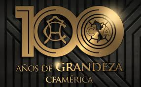

En 1916 nació el equipo que ha dado tantas a alegrías a millones de aficionados, el Club América. En ese entonces para darle su primer imagen de identidad surgieron las letras C y A en el primer escudo, fue el primer símbolo americanista, pero en poco tiempo cambió a un escudo muy parecido al de la actualidad, el cual ya contenía el continente americano, su aparición coincidió con que América fue aceptado en la liga de Primera Fuerza para la temporada 1917-1918.
Para 1938 hubo un cambio radical ya que apareció el Águila en el escudo, se utilizó por una breve temporaday se volvió a usar esporádicamente en las temporadas de 1943 a 1946.
Desde aquellos años el escudo del continente americano ha prevalecido y han sido pocos los cambios en su imagen, este logotipo es el más aceptado por la afición americanista en su historia.
Para el año de 2010 en el torneo Bicentenario , siendo el aniversario 95 se implementó un pequeño cambio que con una mejor estética diera mayor impacto visual al escudo de América, tal y como lo puedes observar en la parte de abajo en la imagen de a lado.
Este escudo nos da identidad y es del gusto de la afición americanista.
Ya con los cambios finales, apareció en el pecho del uniforme por primera vez en la temporada de 2011.
Este es el escudo oficial y actual del Club América.

{kind=link}